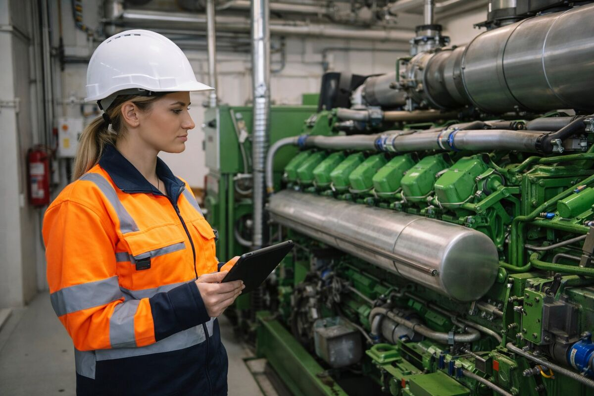
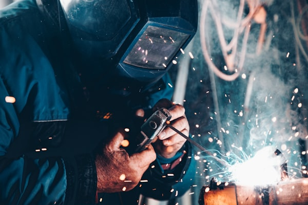
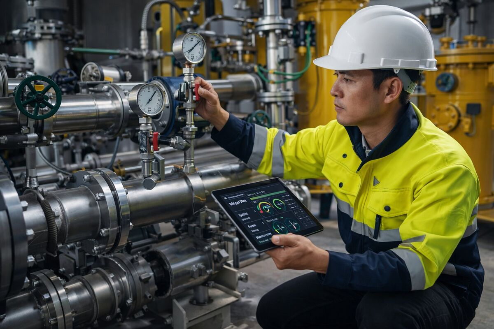

Un impianto di biogas è un'industria, e va gestito come tale. Con procedure, responsabilità chiare e numeri controllati ogni giorno.
FAR.E Energy conduce gli impianti per conto della proprietà. Non possiede impianti propri e non vende tecnologia: lavora solo sul risultato dell'impianto.
Prendiamo in carico il lavoro di tutti i giorni con un modo di lavorare che resta: ogni attività ha una procedura, ogni procedura ha un responsabile, ogni risultato si misura.


Il nostro nucleo tecnico viene dall'Oil & Gas e dai grandi gruppi industriali. Portiamo negli impianti lo stesso metodo, un passo alla volta e con interventi verificabili nei numeri.
Abbiamo gestito interamente un impianto biogas, dal piazzale alla manutenzione, con nostri operatori in campo. Abbiamo internalizzato il piazzale con procedure standard, introdotto la manutenzione preventiva e riprogettato la ricetta sul costo per metro cubo di metano. Il costo delle biomasse è sceso da circa 680.000 a circa 360.000 € su base annua.

Perché un impianto di biogas o biometano va governato come un sistema e non come un insieme di variabili indipendenti.
Sì. FAR.E Energy conduce gli impianti per conto della proprietà, con operatori in campo, procedure standard, manutenzione preventiva e un report ogni giorno. FAR.E Group non possiede impianti propri.
Operatori con procedure standard, gestione di piazzale, carico e magazzino delle biomasse, ogni carico tracciato in Methan.IQ, manutenzione preventiva con piano trimestrale, ricambi critici a scorta e procedure di emergenza.
La proprietà. Noi portiamo metodo, strumenti e controllo dei numeri; le decisioni restano a chi possiede l'impianto.
No. Lavoriamo con la proprietà e con il team dell'impianto: il campo esegue procedure definite, la proprietà e l'asset manager decidono sulla base dei numeri.
No. FAR.E Group è un operatore tecnologico indipendente: non possiede impianti e non vende impianti né macchinari.
Con un report giornaliero via email: produzione, caricato rispetto al prescritto e arrivi rispetto al previsto, registrati sul momento in Methan.IQ.
Raccontaci l'impianto: partiamo dai numeri di oggi per capire dove si perde margine.
Analizziamo il tuo impianto